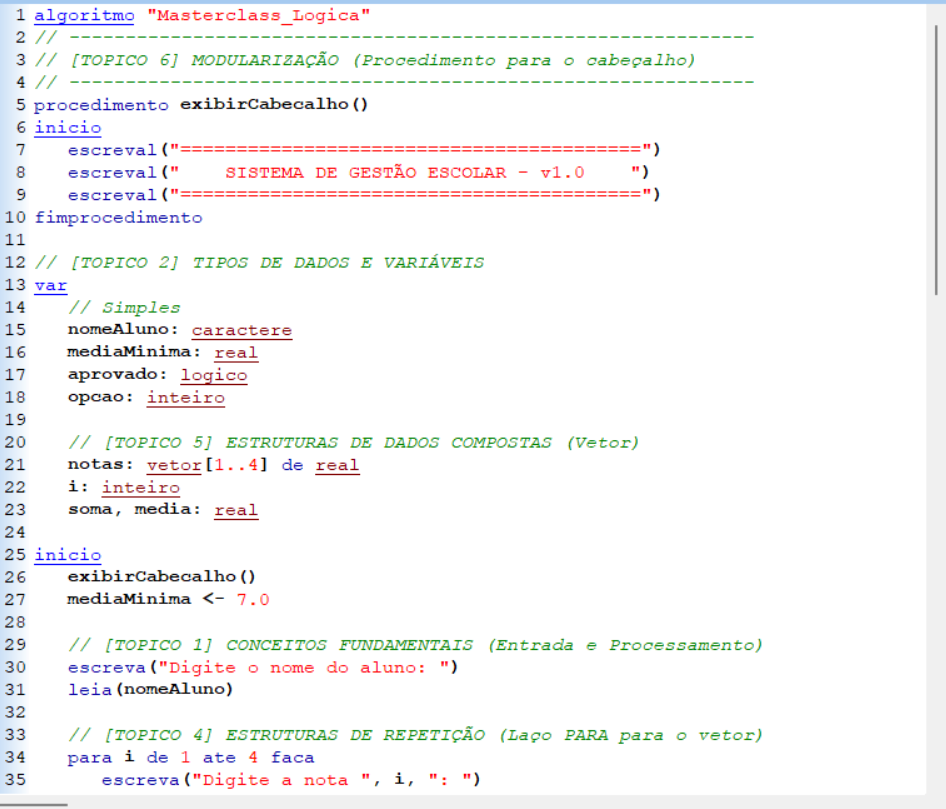
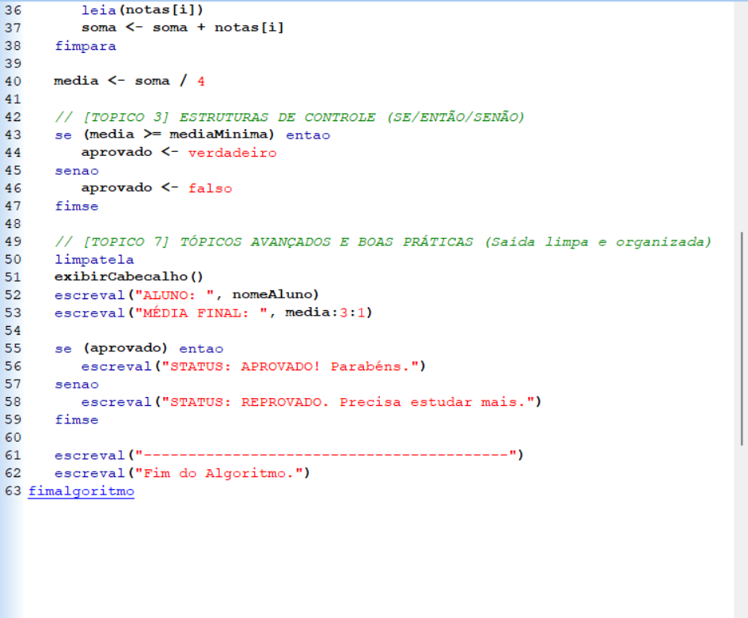

Bem-Vindos ao nosso site, aqui voce aprenderam tudo sobre a materia de algoritmos e logica da programação, Conceitos fundamentais, Tipos de Dados e Variáveis, Estruturas de Controle, Estruturas de Repetição, Estrutura de Dados Compostas, Modularização, Tópicos Avançados e Boas Praticas, o objetivo do site visa ajudar o aluno nas duvidas que vem surgindo durante o estudo da matéria, visando servir como um grande aliado no seu estudo, então alem de aprender espero que se divirtam como nosso site.
O Conceito: Um algoritmo não é o código final, mas a estratégia lógica por trás dele. É uma sequência finita de passos que resolvem um problema específico sem ambiguidades.
Analogia: Imagine um GPS. Ele não dirige o carro por você, mas te dá o passo a passo (Vire à direita, siga por 2km). Se uma instrução estiver errada, você não chega ao destino.
A Anatomia: Todo algoritmo precisa de uma Entrada (dados), um Processamento (ação) e uma Saída (resultado).
Dica do Mestre: Antes de programar no VisualG, escreva a lógica em papel. Se você não sabe o passo a passo na cabeça, o computador também não saberá.
O Conceito: Variáveis são espaços na memória RAM do computador identificados por um nome. O Tipo de Dado define o que aquela variável pode guardar.
Analogia: Pense em caixas de mudança. Você etiqueta uma como "Livros" (Inteiro) e outra como "Frágil" (Lógico). Você nunca tentaria guardar um armário dentro de uma caixa de sapatos.
Tipos Essenciais: * Inteiro: Números sem vírgula.
Real: Dinheiro, peso e medidas.
Caractere: Nomes, senhas e textos.
Lógico: Apenas dois estados (Verdadeiro ou Falso).
Dica do Mestre: Use nomes semânticos. Em vez de var x, use var preco_total. Isso torna seu código legível para outros humanos.
O Conceito: É o que dá inteligência ao software. O programa analisa uma condição e decide qual caminho seguir, desviando o fluxo da execução.
Analogia: O segurança de uma festa. Ele olha sua identidade: SE (idade >= 18) ENTÃO você entra. SENÃO, você volta para casa.
Operadores Lógicos: O E exige que todas as condições sejam verdadeiras. O OU aceita se pelo menos uma for.
Dica do Mestre: Use o ESCOLHA...CASO para menus (1. Iniciar, 2. Opções, 3. Sair). É muito mais limpo do que usar vários SE um dentro do outro.
O Conceito: Servem para repetir um bloco de comandos várias vezes sem precisar reescrevê-los. É o que economiza horas de trabalho manual.
Analogia: Imagine que você é um atleta dando voltas em uma pista.
PARA: Você sabe que precisa dar exatamente 10 voltas.
ENQUANTO: Você corre enquanto o sol não se puser (você não sabe quando vai parar).
REPITA: Você dá uma volta e depois olha se ainda tem energia para continuar.
Dica do Mestre: Cuidado com o "Loop Infinito". Sempre garanta que a condição de parada será atingida, ou o programa travará o computador.
O Conceito: Quando temos muitos dados do mesmo tipo, usamos estruturas compostas para não criar centenas de variáveis individuais.
Analogia: Um prédio de apartamentos. Em vez de ter 10 casas espalhadas pela cidade, você tem um prédio (Vetor) onde cada andar é um índice (Apto 1, Apto 2). Se for uma Matriz, você tem o Bloco (linha) e o Apartamento (coluna).
Uso Prático: Armazenar uma lista de compras, as notas de uma turma inteira ou o inventário de um jogo.
Dica do Mestre: Use sempre um laço PARA para percorrer um vetor. Eles foram feitos um para o outro.
O Conceito: Consiste em quebrar um programa gigante em pequenas peças (Funções e Procedimentos) que realizam tarefas específicas.
Analogia: Peças de LEGO. Você constrói o motor separadamente, as rodas separadamente e depois junta tudo para formar o carro. Se o motor quebrar, você mexe só no módulo do motor.
Função vs. Procedimento: A Função te devolve um valor (ex: calcular raiz quadrada). O Procedimento apenas executa uma tarefa (ex: limpar a tela).
Dica do Mestre: Se você está copiando e colando o mesmo código em vários lugares, pare. Crie uma função e apenas a chame quando precisar.
O Conceito: Não basta o programa funcionar, ele precisa ser rápido e organizado. Aqui estudamos como colocar dados em ordem e achá-los rapidamente.
Analogia: Tente achar uma palavra em um dicionário cujas páginas estão todas embaralhadas. É impossível. Mas se ele estiver em ordem alfabética (Ordenado), você acha em segundos.
Algoritmos Famosos: O Bubble Sort (troca de valores vizinhos) é o mais comum para aprender como o computador organiza uma lista.
Dica do Mestre: A organização dos dados é o que define se seu sistema será leve ou se vai "engasgar" quando tiver muitos usuários.

